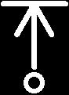
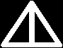
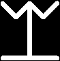
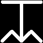
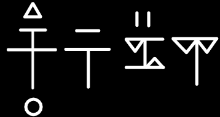
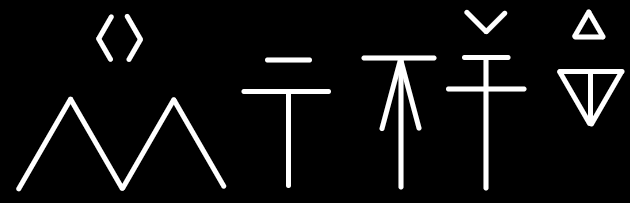
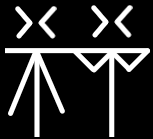
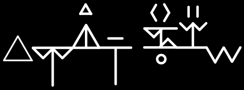

Last modified:
Last modified:This guide details the dialect most commonly spoken among kholo of the Mwangi Expanse, as opposed to those dialects spoken in Katapesh or other areas.
Commonly referred to as High Kholo, reflecting the Mwangi gnolls' greater (by comparison) penchant for civilized culture and trade.
Natively, it is simply called Kholo, or Kholoyyisii ("Kholo-speech"). Notes are not kept on other dialects of Kholo, except as they directly relate to this one.
Remember: Kholo are not humans, and do not possess human mouth anatomy. This document takes a little "Okay so these guys have funny dog mouths" to follow. It's worth it, this is fun. I promise.
My name is Taica, and neither I nor this document nor any of its contents are directly affiliated with Rose-Winds LLC or Blake Davis.
| Bilabial | Bidental1 | Dental | Interdental2 | Palatal3 | Velar | Glottal | |
|---|---|---|---|---|---|---|---|
| Plosive (stop) | p b | t d | kh gh | k g | (') | ||
| Nasal | m | nn | n | ||||
| Tap | r | ||||||
| Fricative | f v | nh | s z | sh zh | hh | ||
| Approximant | w | (jh)4 | l | j | |||
| Yip5 | y | yy | yh | ||||
| Front | Central | Back | |||
|---|---|---|---|---|---|
| Close | i (ii) | u (uu) | |||
| e | ɪ (i) | ||||
| Mid | o | ||||
| ʌ (u) | |||||
| Open | ä (a) |
Symbols
Consonants
These were derived from a set of hieroglyphs representing the rough position of a kholo's mouth and teeth when making the related sounds.
| B | D | F | G | Gh | Hh |
|---|---|---|---|---|---|
|  | |||||
| J | Jh | K | Kh | L | M |
|  | |||||
| N | Nh | Nn | P | R | S |
| Sh | T | V | W | Y | Yh |
|  |  |
 | |||
| Yy | Z | Zh | (') | ||
 |
Vowels
Vowels, meanwhile, were derived from pictograms of animals that make similar noises.
Vowels are written as diacritic (small) marks above the consonant that came before them. If a vowel appears at the start of a word, or preceded by another vowel, it is written full-size on its own like a consonant.
| A Crow |
E Fox |
I Pig |
Ii Rat |
O Monkey |
U Dragon |
Uu Ox |
|---|---|---|---|---|---|---|
Punctuation
| Comma | Period (full stop) | Exclamation | Question | Quotation |
|---|---|---|---|---|
Samples
Kholo is written in one of two modes: The normal style, with each letter separate; and the "semi-cursive" style, where each letter is horizontally connected to the next.
The normal style is used in printing, and the semi-cursive style is more common in handwriting (making it by far more common in general). Semi-cursive is more socially formal than normal style; the latter tends to appear more childish.
In semi-cursive style, vowels written at the start of a word (see above) are not connected.
Normal
| Bansil "Best friend" |
|  |
| Fenkhpiira "Witchcraft" |
|  |
Semi-cursive
| Kholo |
|  |
| Aljan zetik "Champion" |
|  |
Kholo generally follows a subject-object-verb sentence structure: "Timmy the ball kicks".
The language is remarkably flexible, however. In most settings, the only strict requirement is that the object follow the subject.
Verb-subject-object ("Kicks Timmy the ball") is a common format in flowery, poetic systems; but tends to be seen as archaic or eccentric in speech.
In more casual writing or conversation, subject-verb-object ("Timmy kicks the ball", as in Common) is seen as more formal than the norm, and this is usually sufficient.
Adjectives follow the noun they modify, unless compounded or used as prefixes. There is no strict requirement for which form to use, though the prefix form is discouraged if the noun is already particularly long. (What counts as "particularly long" is up to personal taste.)
Kholo declines nouns, verbs, and adjectives according to a fusional suffix system. These suffixes indicate verb tense, the number of both the subject and object of a sentence, as well as the level of formality.
| Informal | Formal | ||
|---|---|---|---|
| Past | -(j)a | -to | |
| Present | Perfect | -(j)o | |
| Continuous | unmodified | -(w)ej | |
Kholo does not natively distinguish a future tense. Indicating an action yet to be taken is done via context. When it must be made explicit, the closest equivalent is to prepend the word "ta-" ("Time") to the related verb as a prefix, though native speakers find this clunky.
| Informal | Formal | ||
|---|---|---|---|
| Non-Kholo1 | Kholo2 | ||
| Singular | unmodified | -(w)im | |
| Plural | -(a)kh | -hha | -(a)ma |
| Myriad | -(a)ka | -(w)el | |
The same word, if used more than once, can drop its numerical suffix following the first usage; unless the number or quality changes.
| Kholo | Common (literal) | Common (proper) |
|---|---|---|
| Robawel hhuujo khuje. Arnh roba ginn. |
Ancestors-many want worship. Refuse ancestor(s-many) evil. |
The ancestors wish for us to revere them. It would be evil to refuse the ancestors. |
The conditional mood shows a potential or hypothetical action being taken, as in uses of the Common "if" or "would".
To indicate an action reliant on another (as in Common "if"), Kholo constructs a present-tense sentence, followed by the conditional action:
| Kholo | Common (literal) | Common (proper) |
|---|---|---|
| "Hhama'ba nnuu rela, ez khorahhii ba'elma." | "My father has death, and despair I feel." | "If my father dies, then I will feel despair." |
To indicate a hypothetical action (as in Common "would"), Kholo relies on making the action statement and then rejecting it:
| Kholo | Common (literal) | Common (proper) |
|---|---|---|
| "Ba owja'nha khlita, uubasja." | "I break your paw, but I do not." | "I would break your paw." |
Note the use of "uubasja", a contraction of "u ba se'a", meaning "but I do not".
The genitive case indicates ownership, possession, or association. In Common, this case is shown with the suffix 's, as in "Timmy's ball," or with the particle 'of,' as in "the Ides of March."
Kholo follows a principle of attribution, whereby the owner or possessor is treated as an adjective of the owned noun:
| Kholo | Common |
|---|---|
| "Yyuumi Yyii'ta" | "Thorn's prey" |
| "Shava'nha" | "Your heart" |
| "Aljanik awoa" | "The god of gold" |
The imperative mood indicates a command or directive from the speaker to the listener. Common shows this case by constructing a present-tense, second-person sentence ("You take a left at this stop sign") and omitting the subject pronoun ("Take a left at this stop sign").
Kholo imperatives follow a similar structure: The pronoun is omitted, and the verb is left unmodified if informal, or made present-tense if formal.
| Kholo | Common |
|---|---|
| "Nno alkhit'ba." | "Write my legend." |
| "Hhja ber!" | "Sing for me!" |
| "Vrito hhja'ba nhaj'er." | "Allow me to sing for you." |
The potential case corresponds to the Common verb phrase "to be able" and its conjugations, such as "I can" and "I could".
Among the grammatical cases shown so far, the potential is by far the simplest: Attach the suffix -wa to the relevant pronoun, and decline the verb (if the sentence has one) as normal.
To negate the potential, as in "I could not" or "He cannot", apply the -'a suffix in addition.
| Kholo | Common (literal) | Common (proper) |
|---|---|---|
| "Yhiiwa ba'nii." | "He-can me-kill." | "He can/could kill me." |
| "Bawa yhii niija." | "I-can him killed." | "I could have killed him." | "Bawa'a!" | "I-can-not!" | "I can't!" | "Khewa'a!" | "This-can-not!" | "This can't be!" |
A set of grammar rules exists for when to prevent accidental doubling of consonant and vowel sounds in Kholo, especially when applying suffixes.
When amended with suffixes for tense, number and formality: If a word already ends in the major consonant sound of the suffix, that sound should be removed before the suffix is applied.
| Kholo | Common |
|---|---|
| Inkh | Knee |
| Inkhakh -> Inakh | Knees |
The rule is generally applied for very similar consonant sounds on a case-by-case basis. Non-native speakers may or may not struggle with deciding what counts as "similar", but aspirated consonants are the easiest to figure out.
| Kholo | Common |
|---|---|
| Inkh | Knee |
| Inkhaka -> Inaka | Knees (many) |
Doubled vowel sounds are not removed in this way, but are instead distinguished with the addition of a glottal stop. The consonants involved are still treated according to the prior rule.
| Kholo | Common |
|---|---|
| Alim | Queen |
| Alimim'ba —> Ali'im'ba | My queen |
| Alimima'ba —> Ali'ima'ba | My queens |
Kholo speech tends to sonorize (i.e. morph from voiceless to voiced) consonants which occur at the beginning of a word which was proceeded by a word ending in a voiceless consonant sound.
This change is formalized to the point that it is frequently glossed in writing, but not consistently.
Formal texts will usually gloss sonorization in dialogue while preserving the original spelling in narration and other contexts. Highly formalized texts, such as ancestral codices or missives between cultures, are the most likely to gloss sonorization in all contexts.
Informal texts, meanwhile, tend to ignore sonorized initial consonants entirely, using only the voiceless original spelling. In other words, for most Kholo, sonorization is a purely vocal phenomenon, and its display in writing is a dead giveaway that the writer is either a foreigner or an egghead.
| Kholo | Common |
|---|---|
| Tashikh suuja'ba -> Tashikh zuuja'ba | Before I came |
| 1st | 2nd (informal) | 2nd (formal) | 3rd | |
|---|---|---|---|---|
| Singular | Ba | Nha | Nna | Yhii |
| Plural | Baj -'i (suffix) |
Nhaj | Nnaj | Yhii'a |
| Who | What | When | Where | Why | How |
|---|---|---|---|---|---|
| Pak | Paj | Pajda | Pajduu | Yyo'a | Iikha |
As a rule, kholo address members of races they enslave or feed on exclusively in the third person.
This has given rise to the perception of kholo brutes as constantly yipping (notice the yh sound in the 3rd-person pronouns): They are shouting insults at their targets.
Ordinal numbers (i.e. first, second) are indicated with the suffix -jan ('-most').
| Common | Kholo | Numeral |
|---|---|---|
| Zero | Oa | |
| "A few" | Ewa | |
| "A lot" | Aka | |
| Endless | Aston | |
| Common | Kholo | Numeral |
|---|---|---|
| One | Ik | |
| Two | Ird | |
| Three | Jink | |
| Four | Nen | |
| Five | Nara, Nar- | |
| Six | Mon | |
| Seven | Mjo | |
| Eight | Onje, On- | |
| Nine | Wen | |
| Ten | Wakh |
| Common | Kholo | Numeral |
|---|---|---|
| Eleven | Wakh ik | |
| Twelve | Wakh ird | |
| Thirteen | Wakh jink | |
| Fourteen | Wakh nen | |
| Fifteen | Wakh nara | |
| Sixteen | Wakh mon | |
| Seventeen | Wakh mjo | |
| Eighteen | Wakh onje | |
| Nineteen | Wakh wen | |
| Twenty | Irdwakh |
| Common | Kholo | Numeral |
|---|---|---|
| Hundred | Wanut | |
| Five hundred | Narwanut | |
| Thousand | Ghoro | |
| Five thousand | Narghoro | |
| Ten thousand | Waghoro | |
| Hundred thousand | Wanut ghoro | |
| Million | Ghorokh |
From birth, kholo youths are given a 'root' for a name: A single word of natural origin, such as an animal, plant, or natural feature; or a part of such. As they age and gain notoriety, they may choose to add modifiers or adjectives to this root, symbolizing their growth and accomplishments.
A kholo born with the root name 'Ash' may further name themselves 'Ash upon Ground' when reaching maturity. When slaying their first grave monstrosity, they may become 'Ash upon Arid Ground'. And so on and so forth.
It is not common, but nor is it rare, for kholo to give each other such a naming element; some long-bonded parties practice this as a means of tying themselves to each other.
Kholo society is famously matriarchal, whereby female huntresses — taller, stronger, and more naturally assertive than their male counterparts — play a dominant role in social ruling and organization.
There are aspects of the Kholo language that are either explicitly or implicitly gendered accordingly.
Take as an example the singular formal suffix, '-(w)im'. It is derived from the native word for female, 'imo'. Likewise, the word for daughter, 'ima,' is also related.
Informal common nouns are not given a suffix. 'Kholo,' as a native word meaning 'tribal predator,' therefore technically refers to a male, while 'kholowim' would be used to address a female listener. In human society, this distinction would likely come across as othering the listener.
Here, though, it is actually those without the suffix who are othered — the suffix is honorable, and is culturally treated like a noble title. It is important to remember that matriarchy is the default in kholo society, and assumptions are made by both speaker and listener accordingly.
Male kholo are excluded from reference with formal suffixes under almost all circumstances; it would be easier to list the exceptions to that rule rather than elaborate on the rule directly. Namely:
Elderly males are entitled to formal reference by their grandchildren, but not by their adult children.
Furthermore, a bonecarver or storyteller is entitled to formality from other males and young females of his tribe; but not from adult females.
Individual exceptions are rarely also made for highly accomplished warriors, but these may be as rare as once or twice in a generation.
The Alkhitakh Hhama'ba is a collection of kholo folktales most comparable to Aesop's Fables or A Thousand and One Nights. As possibly the most comprehensive piece of native Kholo writing, its use is indispensable for outsiders in deciphering cultural norms and nuance in an otherwise profoundly bellicose species.
Its stories mostly center around a male kholo named Thorn, whose growth from youth to elder bonecarver is traced via exploits as a slaver, a brief reformist for the latter system, and a servant to a huntress whom eventually married him. Thorn has long been interpreted as a symbol of virtue for male kholo youths. His characterization as a level-headed, pragmatic, yet unflinchingly bloodthirsty warrior and a friend to outside peoples (as friendly as a kholo can reasonably be called) suggests a model for males to follow in a strongly female-dominated society.
Its name means "Legends of my Father", or "Stories of my Father", making its use as a teaching tool for male kholo even more obvious.
The Tejalima ("Huntress-queen") is a lyrical work handed down across generations by adventuring kholo minstrels, both inside and outside of the Mwangi Expanse. Its exact verses are as diverse as the bards who recite it, but at its core the Tejalima follows Lynx, a kholo huntress of ancient days who befriended a human settler from what would one day become Osirion. The settler, whose name is never given, was wounded in a civil conflict and left for dead on the savannah; Lynx, intending to turn a profit against a slaver, captured the settler, but grew fond of him during their extended return deeper into the Expanse.
Friendship between kholo and humans is a not-uncommon plot device of traditional Kholo literature, but the Tejalima is unique in presenting Lynx's affection for the settler as inherently and dramatically doomed: Tribal and uncivilized, she is able to patch his wounds but cannot aid him when they become infected. Through multiple stanzas spanning months of travel, the settler attempts to hide his affliction from Lynx, but becomes progressively weaker. He loses his will and dies shortly before reaching their destination, never knowing that Lynx had resolved to spare him from slavery.
The lyricism concludes by returning to its initial praise of the freedom in life on the Expanse, though now cast in a colder light. Lynx is said to have faded into the savannah, her life as a huntress irrevocably coloured by her encounter with the settler. Interpretations vary as to whether she had developed romantic feelings for the settler; those that favour this perception ironically tend to be more cynical in nature, casting all attachment with outside peoples as doomed from the start.
In all, the Tejalima has historically acted as a conservative influence on Kholo culture, reminding the lead huntresses of Mwangi tribes not to show mercy to their quarries nor to slack in their duties. As a strictly musical piece, the Tejalima is highly favoured by kholo bards who have ventured far afield, as the tragedy of its story coupled with its lamenting, somber accompaniment is famously moving when performed by a talented musician.
| Kholo | Common (literal) | Common (proper) |
|---|---|---|
Shava'nha a'lo'nha. Gida er'a fuu hho'nha. Er zijika meruua voajo, ez zetikel wilto. Er tuama'ayi yhii'a, sil'nha woluto vuutajo al veren'yhii, |
Heart-you not-predator-you. Hurts for-not make weak-you. For horns-many heaven sounding, and warriors-many ride. For ranks-with they, friend-you fallen carries high shield-they, |
Your heart is not your predator. It does not ache to weaken you. That the horns of Heaven may yet be sounded, and its warriors ride; For among their ranks, your fallen friend bears his shield high, |
| -- Ch. 3, Yhaz Nnim ("To Live and to Lose"). pp. 97. | ||
| Kholo | Common (literal) | Common (proper) |
|---|---|---|
Owja Yyii'ta ghalmate alshuu yhii firita. Inso bintosa. Yyii'ta josa Zuato'ik ez yyiima yhii. Kipnhiikh Inso tiilikha, u mobeta'a sonaut Yyii'ta. Yyii'ta owaja dakh, sonaut tun'pet. Inso bintaka keko issa. Twakh souukha. Gom'bit Inso korkha, er kipnhii Yyii'ta shtiipa ghalmatekh. Yyii'ta hhekh owaja ez tonta kipnhii. Peneta nhi tonto poltopakh ap. Yyii'ta tunshikh uraja ez iifita owja. |
Paw-Thorn shoulder-brother-he touched. Hawk sneered. Thorn looked Osirion-one and mother-she. Blades-Hawk flashed, but turned-not face Thorn. Thorn stepped forward, face low-see. Hawk tooth-many through hissed. Eyes burned. Word-last Hawk choked, for blade-Thorn pierced shoulders. Thorn backward stepped and dropped blade. Watched blood drip fingers from. Thorn lower bent and hid paw. |
Thorn placed a paw upon his brother's shoulder. Hawk sneered. Thorn looked upon the Osirian and her mother. Hawk's blades flashed, but he did not turn to face Thorn. Thorn stepped forward, his face turned low. Hawk hissed through his teeth, his eyes burning. Hawk's last word was choked, for Thorn's blade had already pierced between his shoulders. Thorn stepped backward and dropped his blade, sternly watching the blood drip from his fingers. Thorn bent lower and hid his paw. |
| -- Ch. 7, Nnomoja Paja ("Mourning What Was"). pp. 201-202. | ||